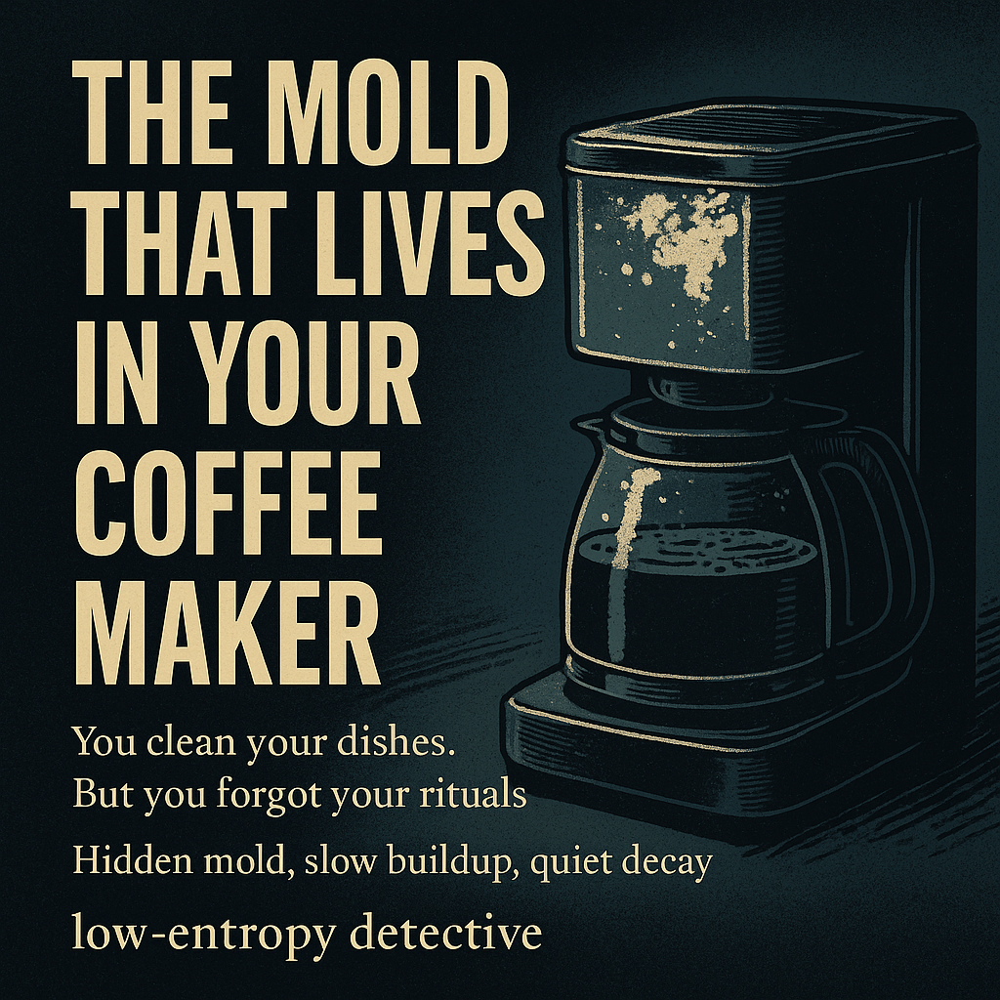

The Mold That Lives in Your Coffee Maker
Every morning, you brew. Same button. Same mug. Same illusion of control. But lately the taste has turned. It’s not the beans — it’s entropy in your ritual. Hidden mold, slow buildup, quiet decay.
Diagnosis: Appliance Entropy
Inside every coffee maker lives a perfect little ecosystem: warm, damp, and dark. It’s what mold dreams of. Over time, residue from water and coffee oils forms biofilm in the tubing — feeding colonies you’ll never see.
Clues That Your Coffee Maker Has Turned
- Off-taste or sour aroma: early-stage biofilm and mineral buildup.
- Residue in the water reservoir: visible sediment or slime layer.
- Longer brew times: clogged heating or flow channels.
- White crust or flakes: limescale accumulation on the heating plate.
- You’ve never descaled it: entropy confirmed.
Countermeasures: The Coffee Maker Field Kit
Entropy doesn’t need a full overhaul — just a routine. These tools make it easy to clean what you can’t see.
The Fix
- Descale monthly if you brew daily — biofilm begins around week four.
- Empty and dry the reservoir each night.
- Leave the lid open to prevent condensation buildup.
- Use filtered water to reduce mineral deposits.
- Don’t trust taste alone — trust your schedule.
Every ritual is a system. Every system decays. Maintenance isn’t glamorous — but neither is drinking mold. Today’s detective work: run a cleaning cycle. Tomorrow’s reward: coffee that doesn’t taste like entropy.
As an Amazon Associate, Low Entropy Detective earns from qualifying purchases.